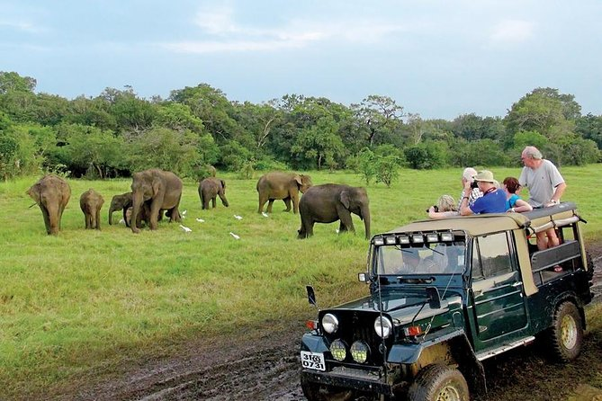
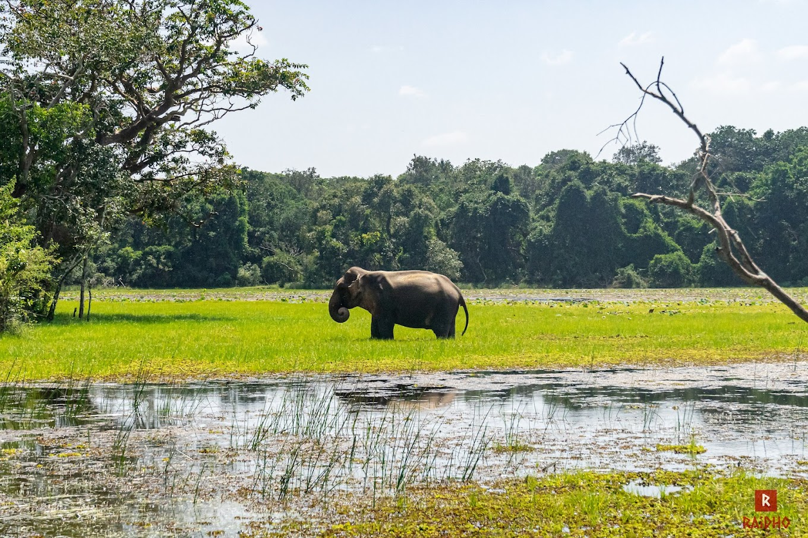
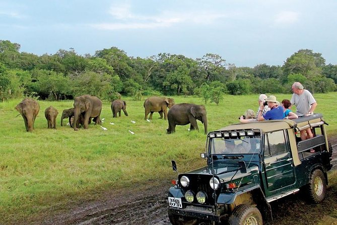
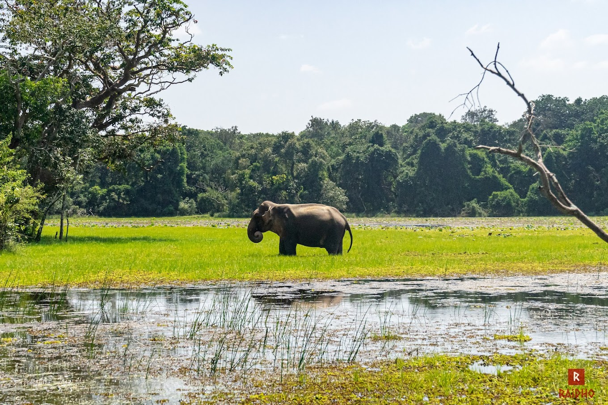

| Horton Plains National Park. |
Located at an elevation of 2,300 meters, Horton Plains National Park in Sri Lanka’s central highlands encompasses montane grassland and cloudy forests. The park is popular for housing the famed ‘World’s End Cliff,’ a long, steep plunge of 880m where the plateau comes to a dramatic stop. The national park is home to a variety of wildlife species, most notably purple-faced langurs, Sri Lankan leopards, Red Slender Loris, Toque monkeys, magpies, and sambar deer. |
 |
Explore |
| Gal Oya National Park |
Gal Oya National Park is near the town of Ampara, at the Senanayake Samudra reservoir. Founded in 1954, the less visited but wonderfully unique national park shelters numerous fauna, including an impressive sectionersity of birdlife. Spanning an area of 25,900 hectares, the fauna at Gal Oya National Park comprises 32 species of mammals, such as Sri Lankan elephants, leopards, and deer, and reptiles like star tortoises and mugger crocodiles. The elephant sightings are undoubtedly the best feature of the park. |
 |
Explore |
| Wasgamuwa National Park |
The Wasgamuwa National Park is in the Matale District of Sri Lanka. In 1984, when the Mahaweli Development Project displaced wild animals, this national park was built as a refuge for them. This national park has a dry zone climate, meaning it receives less rainfall than the other wet parts of the country. It has both forests and scrublands.
This national park is home to herds of Asian elephants, the purple-faced langur, and the toque macaque, along with rare sightings of the Sri Lankan Sloth Bear and leopards. It is also a popular bird-watching spot |
 |
Explore |


 


